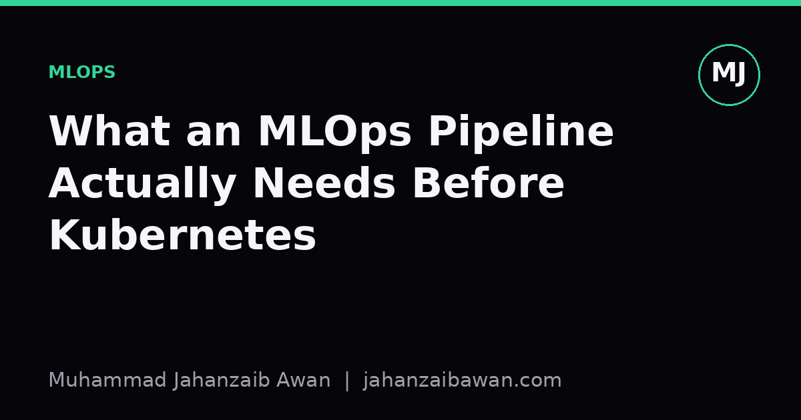
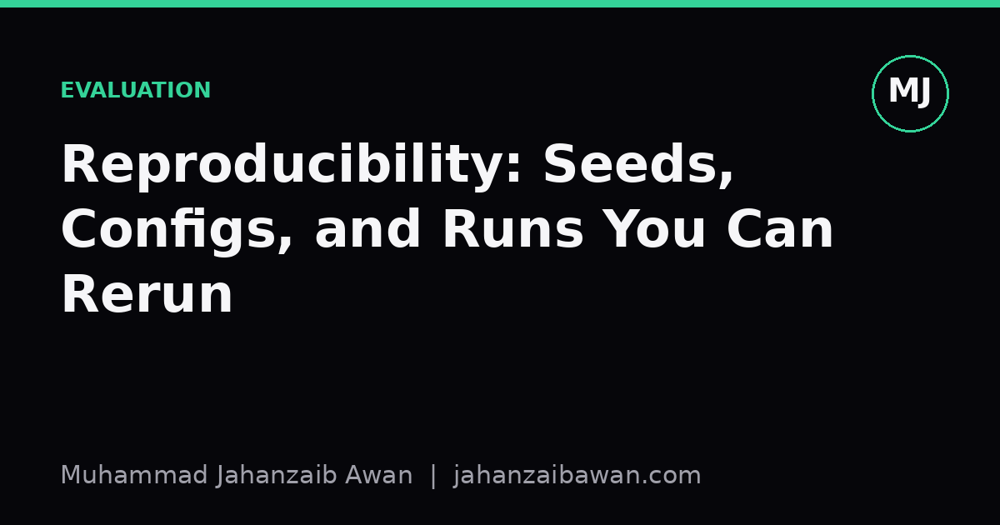
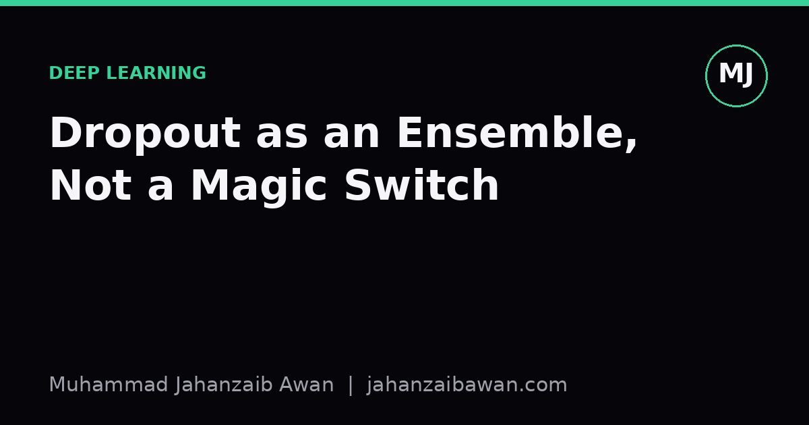
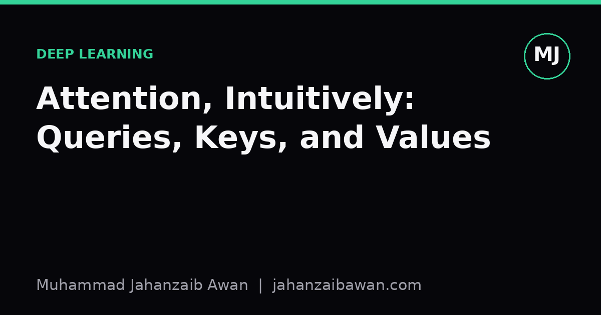
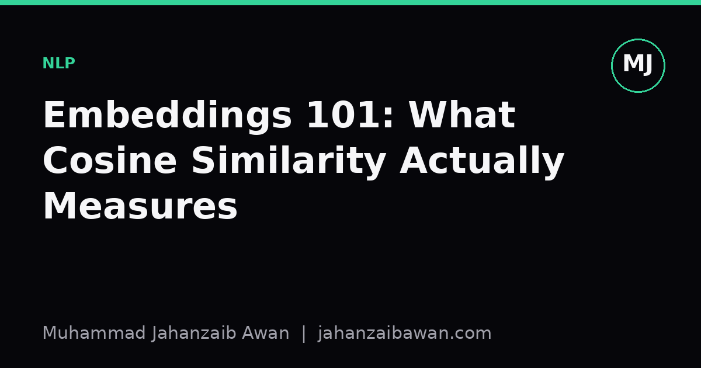
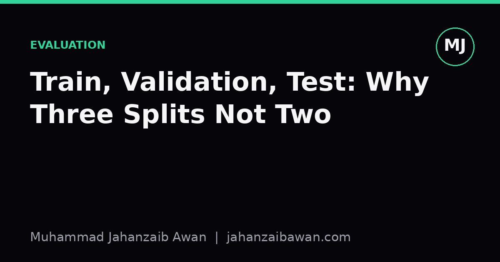
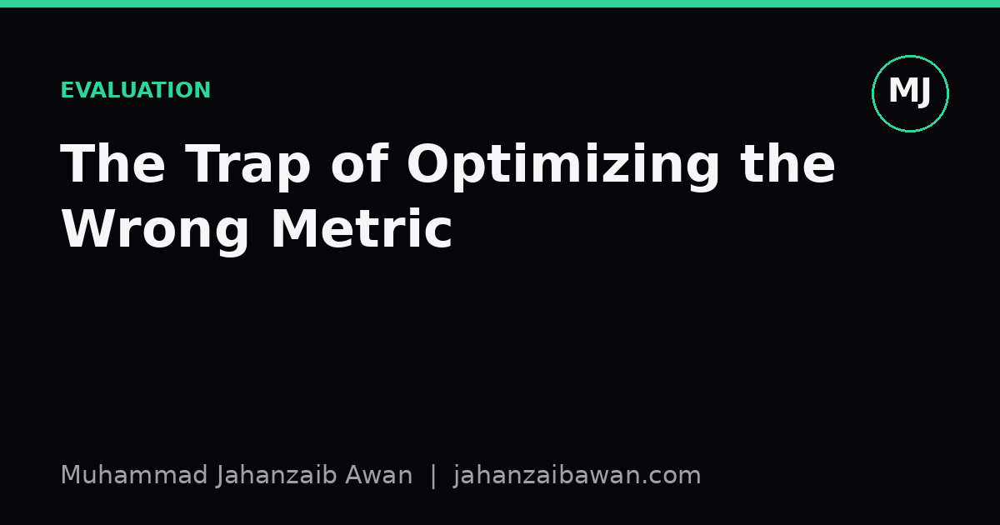
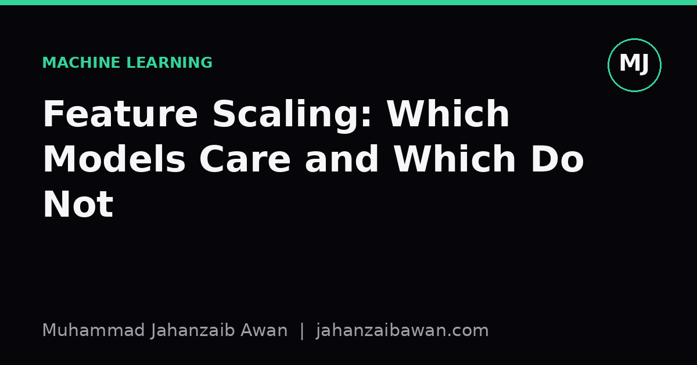
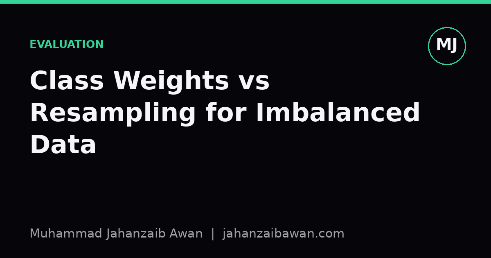

Notes on honest evaluation
Short write-ups on the part of machine learning that doesn't fit in a leaderboard: leakage, baselines, and why a good number is usually wrong until proven otherwise.

What an MLOps Pipeline Actually Needs Before Kubernetes
Kubernetes solves a scaling problem you probably don't have yet. Here's what to fix first, from data versioning to leakage-aware evaluation.
10 Jul 2026 Read →SMOTE and Synthetic Data: When It Backfires
SMOTE fixes imbalance in theory but often just teaches your model to memorise interpolated noise, especially when it leaks into your test set.
10 Jul 2026 Read →Overfitting the Validation Set Through Too Many Experiments
Run enough experiments against one validation set and you stop measuring generalisation, you start measuring luck. Here is why, with numbers.
9 Jul 2026 Read →
Reproducibility: Seeds, Configs, and Runs You Can Rerun
Most 'irreproducible' ML results fail for boring reasons: unpinned seeds, missing configs, undocumented data splits. Here is how to fix that properly.
9 Jul 2026 Read →Data Augmentation That Helps vs Augmentation That Leaks
Augmentation only helps when it happens after splitting. Get the order wrong and your validation score becomes a lie.
9 Jul 2026 Read →Reading a Confusion Matrix Beyond Accuracy
Accuracy is a single number that can lie to you. A confusion matrix, read properly, tells you where and why your model actually fails.
8 Jul 2026 Read →BLEU and Its Limits for Evaluating Generated Text
BLEU counts matching word chunks, not meaning. Here is why that gap matters and how to evaluate generated text more honestly.
8 Jul 2026 Read →Perplexity: What It Rewards and What It Ignores
Perplexity tells you how well a model predicts held-out text, but it says nothing about coherence, factuality, or usefulness. Here is what it quietly rewards and ignores.
7 Jul 2026 Read →Tokenization Choices and Why They Change Your Results
Tokenization looks like plumbing, but it decides what your model can see. Get it wrong and no amount of tuning will fix it.
7 Jul 2026 Read →Transfer Learning: Freeze, Fine-Tune, or LoRA?
Freezing, full fine-tuning, and LoRA all solve transfer learning differently. Here is how to choose based on data size, compute, and risk of overfitting.
6 Jul 2026 Read →Gradient Clipping and Exploding Gradients in RNNs
A practical look at why RNN gradients explode over long sequences, and how norm-based clipping keeps training stable without hiding real bugs.
6 Jul 2026 Read →Learning Rate: The First Hyperparameter to Tune
Tune the learning rate before anything else: it decides whether your model converges, stalls, or blows up entirely.
6 Jul 2026 Read →
Dropout as an Ensemble, Not a Magic Switch
Dropout works because it approximates ensembling thousands of thinned networks, not because randomness alone regularises. Here is the intuition, worked through with numbers.
6 Jul 2026 Read →Why Batch Normalization Helps, and When It Hurts
Batch norm speeds up training by taming shifting activations, but it leans on batch statistics that can betray you at small batch sizes or test time.
5 Jul 2026 Read →
Attention, Intuitively: Queries, Keys, and Values
Attention is a soft lookup table: queries ask, keys answer, values deliver. Here is that idea made concrete with numbers.
5 Jul 2026 Read →
Embeddings 101: What Cosine Similarity Actually Measures
Cosine similarity measures angle, not distance. Understanding that difference will save you from subtle bugs in retrieval and clustering systems.
4 Jul 2026 Read →
Train, Validation, Test: Why Three Splits Not Two
Two splits let your decisions leak into your test score. A validation set is what keeps your final number honest.
4 Jul 2026 Read →
The Trap of Optimizing the Wrong Metric
High accuracy can hide a useless model. Here is why the metric you optimize quietly decides what your system actually learns.
4 Jul 2026 Read →
Feature Scaling: Which Models Care and Which Do Not
A practical guide to why distance and gradient based models demand scaled features while tree based models shrug them off entirely.
3 Jul 2026 Read →
Class Weights vs Resampling for Imbalanced Data
Class weights and resampling both target imbalance, but they change different things. Here is how to pick the right one and evaluate it honestly.
3 Jul 2026 Read →
Early Stopping vs Regularization: Do You Need Both
Early stopping and regularization both fight overfitting, but they work through different mechanisms. Understanding the difference tells you when you need one, the other, or both.
2 Jul 2026 Read →
A tuned GRU beat LoRA-fine-tuned GPT-2, here's why
A 117M-parameter transformer lost to a small recurrent net on every metric. Not because transformers are bad, but because the baseline was done properly.
20 Jun 2026 Read →
How a naïve train/test split inflated my UAV F1 by 0.5
The same model, the same data, and a macro-F1 that fell from 0.78 to 0.26 the moment I split the data honestly. A walk through the most expensive bug in ML.
12 Jun 2026 Read →